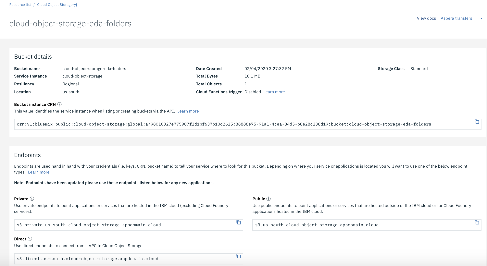
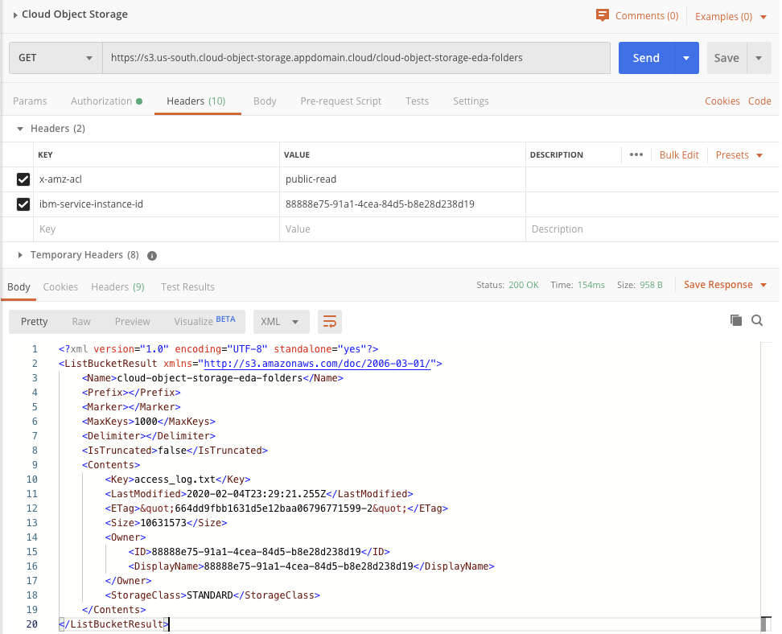

IBM Cloud Object Storage¶
IBM Cloud Object Storage is a cloud based storage for backup, application data files, persistence storage for analytics.
Characteristics¶
- Cloud Object Storage is a multi-tenant system, and all instances of Object Storage share physical infrastructure
- Available with three types of resiliency: Cross Region (EU, AP, US), Regional (multiple availability one in a region), and Single Data Center (multiple servers)
- COS offers REST-based API for reading and writing objects: each storage location has its own set of URLs.
Bucketis the container of the data and defines metadata about the storage: resiliency type, scale factor..

- All buckets in all regions across the globe share a single namespace.
- Bucket configuration defines role based (writer, reader, manager) to control access per user
- To get access to the content of a bucket using a application, define a
ServiceID, under the bucket configuration and theAccess policiesto control the access rules, or link an existing service ID to the bucket.
Access via CLI¶
- Login to IBM Cloud:
ibmcloud login -u .... --sso - Install cloud object storage plugin if not done before, or if you need to update existing version:
ibmcloud plugin install cloud-object-storage - To use the COS plugin, we need to configure it with the region to use and the objectstore‘s unique number, known as a CRN. To get the CRN do the following command using the name of the COS service:
ibmcloud resource service-instance "Cloud Object Storage-yj"
Retrieving service instance Cloud Object Storage-yj in all resource groups under account Cloud Client Engagement Team's Account as boyerje@us.ibm.com...
OK
Name: Cloud Object Storage-yj
ID: crn:v1:bluemix:public:cloud-object-storage:global:a/98010327e7....
ibmcloud cos config crnthen enter the crn from previous command in the prompt.- Get the list of buckets:
ibmcloud cos list-buckets - Creating a bucket (name needs to be globally unique):
ibmcloud cos create-bucket --bucket mybucket
Access via API¶
- Get the API bearer token
export COS_ADMIN_TOKEN=`ibmcloud iam oauth-tokens | grep IAM | awk '{printf("%s", $4)}'`
-
Get service instance ID (replace "Cloud Object Storage-yj" with your service instance name):
export COS_GUID=$(ibmcloud resource service-instance "Cloud Object Storage-yj" | grep GUID | awk '{printf("%s", $2)}') -
Using curl to access the content of a bucket:
curl https://s3.us-south.cloud-object-storage.appdomain.cloud/cloud-object-storage-eda-folders -H "Authorization: Bearer $COS_ADMIN_TOKEN" -H "x-amz-acl: public-read" -H "ibm-service-instance-id: $COS_GUID"

- Download a file (like access_log.txt):
curl -X GET https://s3.us-south.cloud-object-storage.appdomain.cloud/cloud-object-storage-eda-folders/access_log.txt -H "Authorization: Bearer $COS_ADMIN_TOKEN" -H "x-amz-acl: public-read" -H "ibm-service-instance-id: $COS_GUID" - Other curl commands explanation.